|

Publicado originalmente
em 13 de janeiro de 2003
Jeffrey Hunter: Capito
dos capites?
Saiba quem foi o
homem que interpretou o primeiro
capito da histria de Jornada nas Estrelas

|
Henry Herman McKinnies Jr. poderia ter sido o maior astro da histria de Jornada nas Estrelas. Se voc no tem idia de quem ele , tente seu nome artstico: Jeffrey Hunter. 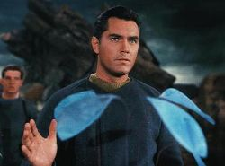 Em "The Cage", Hunter nos oferece um lder com personalidade complexa, cheio de vigor e astcia, mas tambm atormentado por culpa e ressentimento, por ter de decidir sobre a vida e a morte de seus tripulantes. O sentimento era mesmo bem familiar ao ator -- sua vida, encurtada por uma srie de escolhas erradas, tambm foi cheia de turbulncias e ocorrncias trgicas. 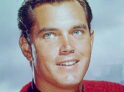 Na famosa UCLA, Hunter foi descoberto por vrios estdios de Hollywood. Chegou a fazer um teste para a Paramount, mas acabou contratado pela 20th Century-Fox, quando fez uma srie de filmes pelo estdio entre 1950 e 1959. 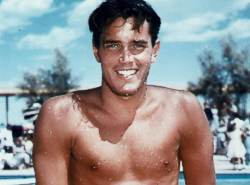 Hunter foi casado com a atriz Barbara Rush entre 1 de dezembro de 1950 a 29 de maro de 1955. Eles tiveram um filho, mas a unio acabou no dando muito certo. 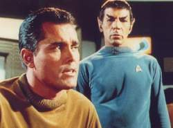 Os dois se casaram em 7 de julho de 1957. Hunter de incio estava muito feliz com o casamento (que daria a ele mais dois filhos), chegando at a adotar um dos filhos da modelo em seu casamento anterior, e o rapaz assumiu o nome artstico de Steele Hunter (com ele, passaram a ser quatro as crianas na casa: Christopher, filho do primeiro casamento de Jeffrey, Steele, do primeiro casamento de Bartlett, e Herman e Scott, do casal). A felicidade matrimonial levou o ator ao seu papel mais importante, em 1961: interpretar ningum menos que o lder da cristandade, em "King of Kings". 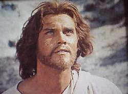 Depois do papel, entretanto, as coisas comearam a piorar. Bartlett decidiu que seria a responsvel pela administrao da carreira de seu marido e escolheria quais papis ele deveria ou no fazer. E a modelo decidiu que ele definitivamente era um astro de cinema -- no de televiso. 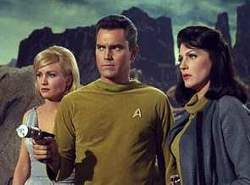 Surpreendentemente, Hunter venceu a batalha familiar e decidiu voltar TV, para um projeto que ele acreditava ter enorme potencial. Em janeiro de 1965, depois de ter filmado o piloto, ele deu uma entrevista (re-publicada anos mais tarde pela revista "Starlog") em que elogiava o arrojo do programa de Gene Roddenberry. 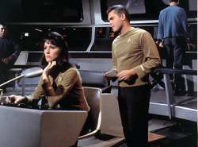 "Ns vamos saber em algumas semanas se a srie foi comprada. Ser de uma hora, colorida, com um elenco regular de meia dzia de pessoas e um astro convidado a cada semana. A coisa que mais me intriga que ele na verdade baseado na projeo da Rand Corporation do que vem por a. Exceto pelos personagens fictcios, ser como dar uma olhada no futuro e algumas das predies certamente vo ser verdade ainda durante nossas vidas." 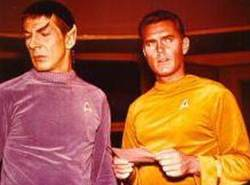 A srie no foi imediatamente comprada pela rede de televiso NBC, mas os executivos tomaram a at ento indita deciso de pedir um segundo piloto. Praticamente toda a tripulao deveria ser trocada -- exceto Jeffrey Hunter e seu capito Pike. Entretanto, parece que num segundo momento Bartlett voltou a reinar. 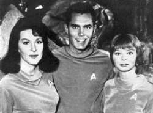 O prprio Hunter contou a histria de forma um pouco diferente, quando foi entrevistado pelo Milwalkee Journal, em 4 de julho de 1965. "Pediram que eu fizesse", ele disse, "mas se eu tivesse aceitado, teria ficado preso por muito mais tempo do que gostaria. Eu tenho vrias coisas surgindo agora e elas devem virar notcia nas prximas semanas. Eu adoro fazer filmes e espero estar to ocupado quanto eu gostaria com eles." 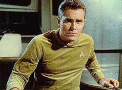 Hunter ainda se casaria uma terceira vez, com a atriz Emily McLaughlin (famosa por seu papel na srie "General Hospital"), em 4 de fevereiro de 1969. Mas j era tarde demais para que algo pudesse ser feito. Antes mesmo de o ltimo episdio de Jornada nas Estrelas ir ao ar, em 27 de maio de 1969 iria falecer, apesar de todos os esforos mdicos. 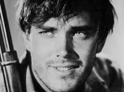 Por todos os relatos, apesar das crises, Hunter sempre foi gentil, cordial e aprecivel. Segundo um amigo, "ele o primeiro ator de boa aparncia que conheci que no era desesperanosamente apaixonado por si mesmo". 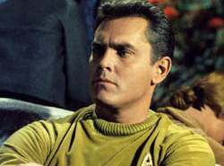 Mesmo assim, Jeffrey Hunter est vivo na memria de todos, como o inesquecvel capito Christopher Pike. |